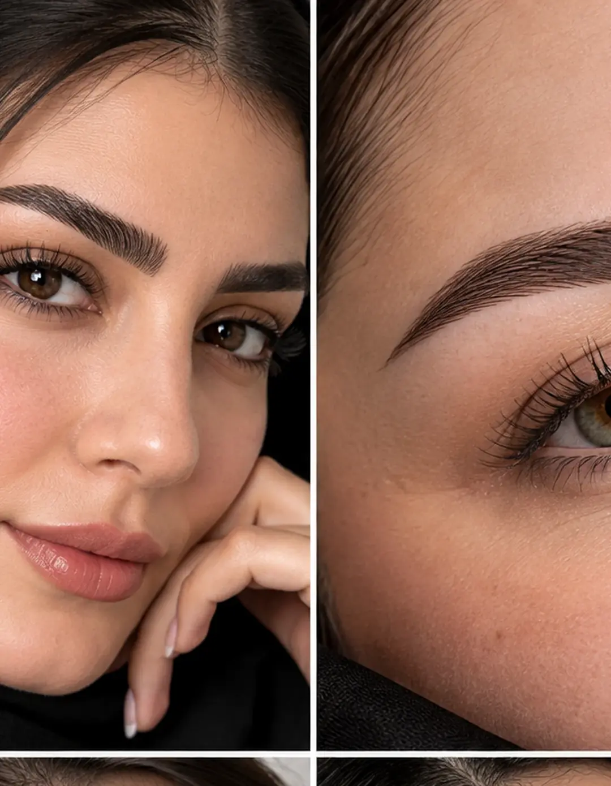
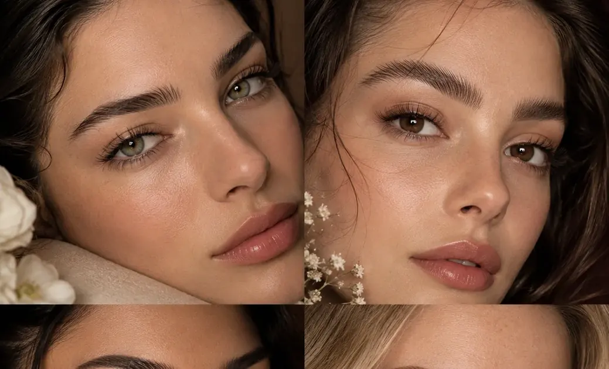
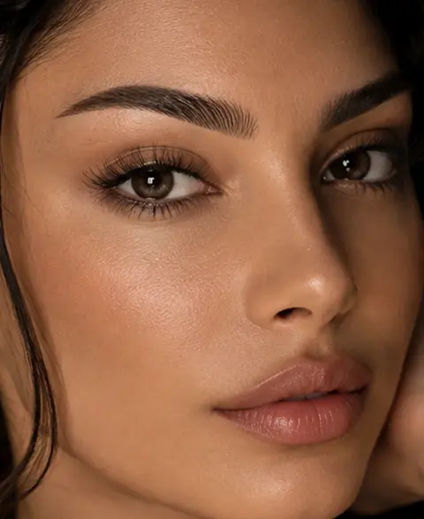
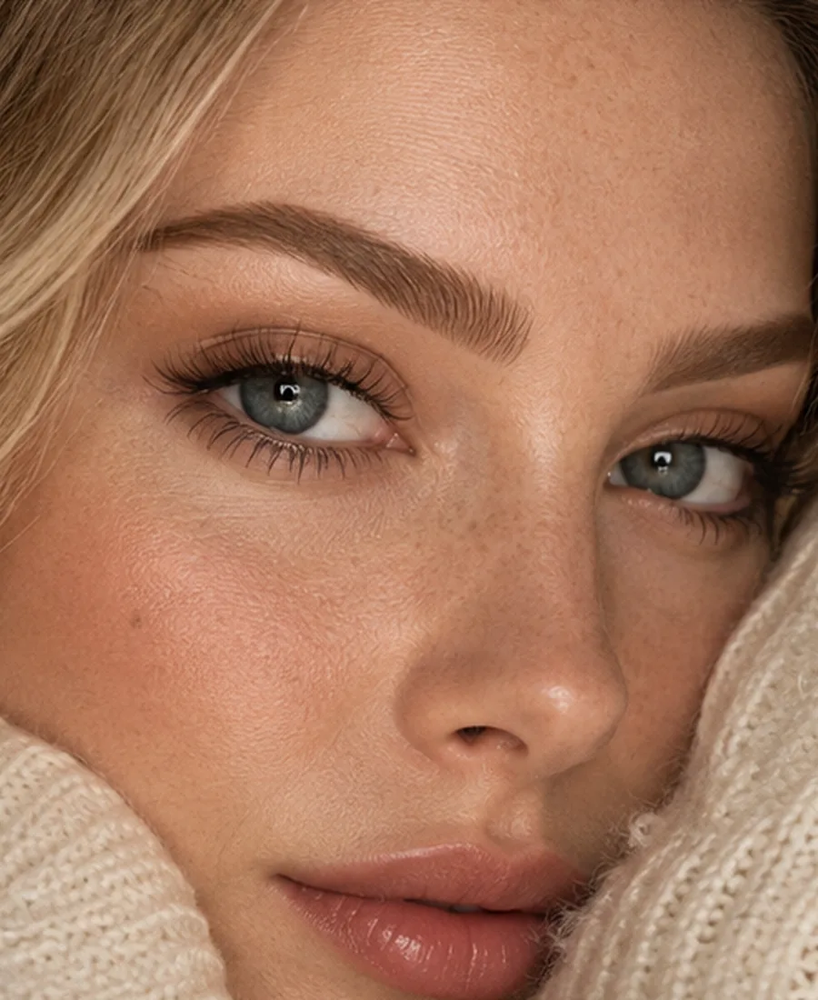

N
نچرال
سبکترین حالت برای وقتی که میخواهی ابرو فقط مرتبتر و کاملتر به نظر برسد.
جزئیات ↙سون گول حامد با تمرکز بر فرم صورت، جهت رشد تارها و جزئیات ظریف، ابروهایی را طراحی میکند که بخشی از چهره باشند؛ نه چیزی جدا از آن.


SON GOOL METHODمیکروبلیدینگ فقط اضافهکردن تار نیست. قبل از اجرا، قاب ابرو، زاویه صورت، تراکم تارها، جهت رشد، شدت رنگ و سبک مطلوب بررسی میشود تا نتیجه با چهره هماهنگ بماند.
اسلایدر را بکش. تصویر سمت چپ حالت طبیعی و تصویر سمت راست نمونه طراحیشده است. تصاویر مرجع مستقل هستند.


تمرکز روی ظاهر تارها، قاب ابرو و هماهنگی با چهره است؛ نه ساختن یک فرم یکسان برای همه.
برای هر فرم صورت، شدت رنگ و تراکم، زبان بصری متفاوتی وجود دارد.
سبکترین حالت برای وقتی که میخواهی ابرو فقط مرتبتر و کاملتر به نظر برسد.
جزئیات ↙تارهای رو به بالا و بافت سبک برای حس مدرنتر و بازتر.
جزئیات ↙ترکیب تار و سایه برای قاب واضحتر با حس هنوز طبیعی.
جزئیات ↙هاله نرم و مخملی برای کسانی که ابروی مشخصتر را دوست دارند.
جزئیات ↙سه سؤال کوتاه جواب بده تا بر اساس انتخابهایت یک پیشنهاد بصری دریافت کنی.
مراحل واضح، بدون شلوغی و با تمرکز روی نتیجهای که برای خودت تعریف کردهای.
شناخت فرم صورت، وضعیت ابرو و هدف تو.
ترسیم فرم اولیه و انتخاب استایل و شدت.
کار روی جزئیات و هماهنگی تارها.
راهنمای بعد از کار و پیگیری روند ترمیم.